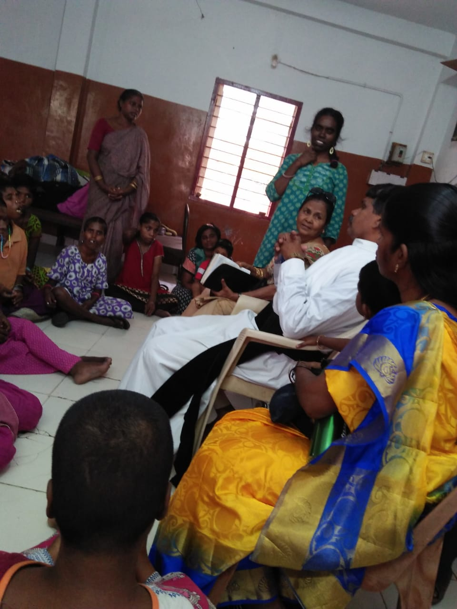
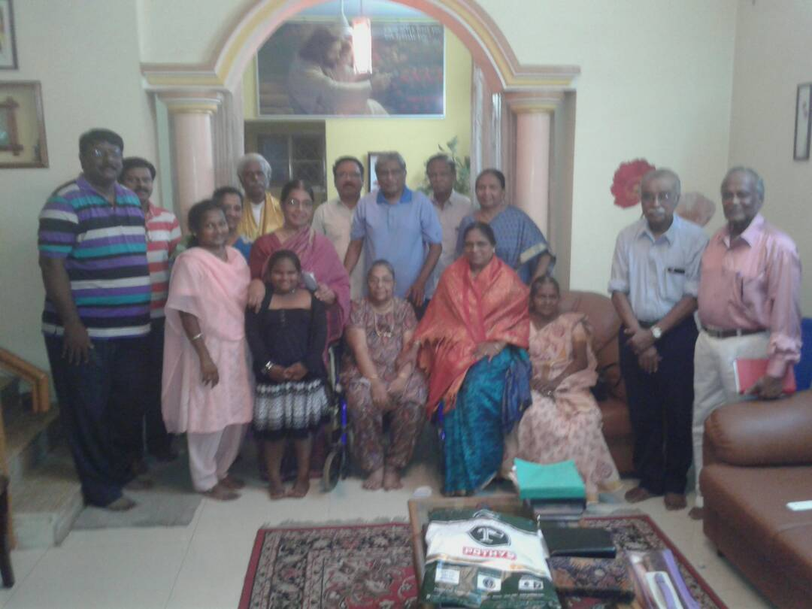
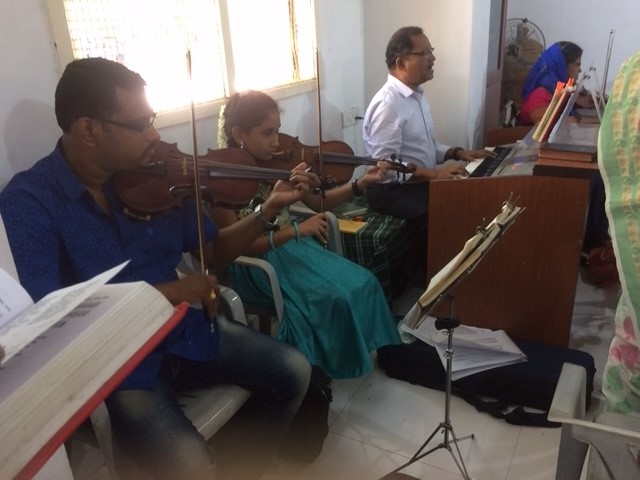

"A woman who fears the Lord is to be praised"- Proverbs 31: 30
The Mission:
- To uphold, encourage and challenge our women in their daily walk as disciples of Jesus Christ.
Vision:
- To see each woman build a close, intimate, personal relationship with Jesus Christ, grow to maturity in her faith and reproduce that relationship in the lives of others.
Goals:
- Encourage spiritual growth and renewal among women in the church.
- Minister to Women's emotional and spiritual needs
- Encourage bonds of friendship between women for support in spiritual growth, relationships, marriages, work and personal needs.
"Train a child in the way he should go, and when he is old, he will not turn from it " - Proverbs 22:6
OUR MISSION: Impact the children with the message of Christ's love for them, facilitate the child's growth in his/her relationship with Jesus Christ and His Word,
foster skill building through relevant Biblical teaching and positive role modeling, and prepare children to discover God's mission for their lives.
Outreach Ministry

Mission : Reach out to people in need with Christ's loved
For I was hungry and you gave me something to eat, I was thirsty and you gave me something to drink, I was a stranger and you invited me in, I needed clothes and you clothed me, I was sick and you looked after me, I was in prison and you came to visit me.'
`I tell you the truth, whatever you did for one of the least of these brothers of mine, you did for me. ' - Matthew 25:35,36,40
Suppose a brother or sister is without clothes and daily food. If one of you says to him, "Go, I wish you well; keep warm and well fed," but does nothing about his physical needs, what good is it? In the same way, faith by itself, if it is not accompanied by action, is dead . -James 2:15-17
Through the outreach ministry, strives to meet the spiritual and emotional needs of believers and non-believers by reaching out to the local community to share the Good news of love and hope through our Lord and Savior Jesus Christ.
Visit to old age homes, and elderly people home visits.

"For my house will be called a house of prayer for all nations"
The Prayer Ministry is open for all who seek to build a deeper relationship with God using prayer as a tool.
To actively intercede for the need of salvation, families, loved ones, our congregation, ministries, community, problems facing the nation and the world, and for deliverance. To seek God's power and guidance of the Holy Spirit in the entire Lord's ministries and so to do His will and purpose for His glory and honor and praise.

"Praise the LORD, How good it is to sing praises to our God, how pleasant and fitting to praise Him!" - Psalm 147:1
The Role of the Music Minisitry is to facilitate such a praise and worship for the congregation.
Many talented musicians, singers present special songs from time to time.
Any one is welcome to join the music ministry and may a joyful noise to the LORD.
Church Retreat is conducted twice every year in the month of December and Season of Lent.
Special speakers conduct various sessions exploring the word of God.
Lunch and Snack will be provided.